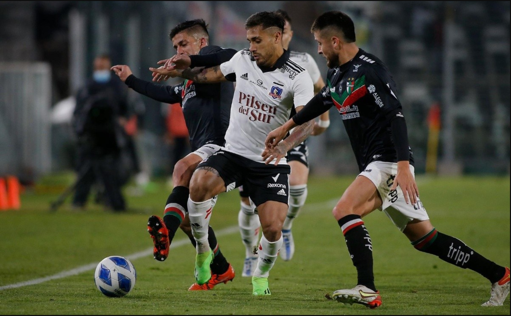

Noticias generales

Elon Musk aborda anuncio de Boric sobre la Política Nacional del Litio: “El mineral es muy común, lo que importa es la capacidad de refinación”
Categoría: Internacionales
El jueves, a través de una cadena nacional, el Jefe de Estado anunció la política nacional para este metal alcalino, el que incluye, entre varios puntos, la creación de una Empresa Nacional del Litio, la que participará de todo el ciclo productivo. Otro de los puntos anunciados fue que la exploración, explotación y agregación de valor, será en base a una colaboración público-privada...
Leer Noticia completa
El peronismo busca candidato en turbulento año de elecciones: sus dos figuras dieron paso al costado
Categoría: Internacionales
Luego que Alberto Fernández y Cristina Fernández de Kirchner anunciaran que no se presentarán a las elecciones presidenciales de Argentina, el peronismo busca con urgencia un candidato para revalidad el triunfo de 2019. El gobernador de la Provincia de Buenos Aires y el actual ministro de Economía son parte de los nombres que suenan para batallar por la Casa Rosada. La palabra más repetida durante las últimas horas entre las filas peronistas es “orden”. Una reorganización necesaria para un movimiento político que enfrenta este octubre elecciones presidenciales en Argentina y que, por el momento, no tiene ningún aspirante fuerte que suene para intentar revalidar la victoria obtenida en 2019 por el Frente de Todos...
Leer Noticia completa
Película chilena 1976 y serie dirigida por Andrés Wood se llevan galardones en los Premios Platino
Categoría: Peliculas nacionales
a película 1976 y la serie Noticia de un secuestro triunfaron en los Premios Platino. La primera es una cinta dirigida por Manuela Martelli y ganó el galardón a "Mejor Ópera Prima de Ficción Iberoamericana". En tanto, la realización del chileno Andrés Wood se quedó con cuatro de las seis nominación que tenía.
Leer Noticia completaNoticias de deporte
Unión Española tumba a Coquimbo Unido y consigue valioso triunfo por el Campeonato Nacional
categoría: Deportes
Unión Española se hizo fuerte como local y, con golpes en los momentos justos, derribó a Coquimbo por la fecha 11 del Campeonato Nacional 2023. >Resultado que deja a los hispanos en el séptimo puesto de la tabla, con 15 unidades. En tanto, los dirigidos por Fernando Díaz se quedaron con 19 puntos en el quinto lugar. Colo Colo superó a Palestino en un Monumental sin público y recupera terreno en el Campeonato Nacional El primer tiempo estuvo marcado por el dominio de los locales, ante un elenco ‘pirata’ que apostó por la velocidad de sus jugadores para hacer daño con el contragolpe.
Sin embargo, la apertura de la cuenta llegaría recién a los 49 minutos y fue obra de un exjugador de Coquimbo: Leandro Garate. El espigado delantero conectó un centro desde la izquierda de Ignacio Núñez y, con golpe de cabeza, batió la resistencia del ‘Mono’ Sánchez. Bryan Carvallo puso el 2-0 final para los de Ronald Fuentes en el 90+6′, tras concretar un veloz contragolpe que pilló mal parada a la zaga de los ‘piratas’. Por la fecha 12 del Campeonato Nacional, Unión Española deberá visitar a O’Higgins en Rancagua, este 30 domingo 30 de abril. El mismo día, Coquimbo volverá a ser forastero ante Deportes Copiapó.
Pitazo final en Santa Laura
— Uni√≥n Espa√±ola (@UEoficial) April 24, 2023
Lo ganamooooooos 2x0 a Coquimbo Unido üëèüëèüëèüëèA celebrar Hinchas Hispanos üî¥üü° Este triunfo es para ustedes üá™üᶠpic.twitter.com/6R5IBIrXPQ
Con un Monumental sin hinchas: Colo Colo recibe a Palestino con el deber de ganar en el plano local
categoría: Deportes
El domingo 23 de abril se jugó el partido entre Colo Colo y Palestino en el Estadio Monumental, en la undécima fecha del torneo chileno. Este fue el primer partido del 'Cacique' a puertas cerradas después de ser castigado por los incidentes en el Superclásico contra Universidad de Chile. Colo Colo buscaba obtener los tres puntos para escalar en la clasificación y quedarse a cuatro unidades del líder Huachipato. Por ahora, el equipo de Gustavo Quinteros se encuentra en el séptimo lugar con 15 puntos.
En el partido anterior, Colo Colo empató sin goles ante Universidad Católica en el Santa Laura. El equipo local tuvo las bajas confirmadas de Leo Gil y Matías de los Santos. Por otro lado, Palestino necesitaba sumar de a tres para recuperar la confianza después de haber caído goleado por Cobresal en La Cisterna. Ambos equipos llegaron con la moral alta después de celebrar victorias en el plano internacional frente a rivales venezolanos.
El partido terminó empatado sin goles. Colo Colo formó con Brayan Cortés; Maximiliano Falcón, Ramiro González, Daniel Gutiérrez; Jeyson Rojas, César Fuentes, Esteban Pavez, Agustín Bouzat; Marcos Bolados y Damián Pizarro. Palestino saltó al campo con César Rigamonti; Benjamín Rojas, Fernando Meza, Cristián Suárez; Bryan Carrasco, Ariel Martínez, Agustín Farías, Fernando Cornejo, Jonathan Benítez; Misael Dávila y Maximiliano Salas.
ùêÇùêàùêìùêÄùêÇùêàùêéÃÅùêç | Junto a @CoolbetChile te dejamos la convocatoria de Gustavo Quinteros para enfrentar a Palestino este domingo. #VamosColoColo | #VamosPorTodo pic.twitter.com/niwNUeBVw3
— Colo-Colo (@ColoColo) April 22, 2023
El secreto de Yerko Urra para ser el arquero goleador de Temuco: "No pensé que me quedaría la pelota"
categoría: Deportes
aca va un texto
El arquero Yerko Urra anotó su primer gol en el profesionalismo, dándole el empate a Deportes Temuco ante San Marcos de Arica en la Primera B.
Yerko Urra, arquero de Deportes Temuco, fue el héroe de los ‘albiverdes’ en el empate de este domingo ante San Marcos de Arica por la Primera B 2023. En los descuentos de la segunda mitad, el guardametas subió al área de los nortinos cuando su equipo caía 1-0 y, con una espectacular ‘palomita’, marcó de cabeza el 1-1 definitivo. En diálogo con BioBioChile, el responsable de que Temuco se quedara con un punto ante los nortinos habló de su tanto, el primero que marca en su carrera durante un partido profesional -había anotado en una tanda de penales-. “Siempre me ha gustado jugar de nueve. En los futbolitos, cuando jugamos con excolegas. Siempre me la tiran de que juegue de delantero, pero ya es un poco tarde”, contó Urra, esbozando una sonrisa.
El portero detalló que le pidió autorización al técnico Juan José Ribera para ir al área rival en la última jugada del partido. “Fui con confianza de hacer algo, por último molestar. Nunca pensé que me quedaría la pelota de frente para convertir. Fue muy lindo, había como 10 mil personas. Lo único malo fue que dejamos escapar 2 puntos, pero Arica jugó muy bien”, sostuvo Urra. Por último, Yerko contó a quiénes les dedicó su primer tanto en el fútbol profesional: “A mis hijos Bruno y Simón, mi pareja María. Y justo para mi papá y mi hermana que hoy estaban en el estadio”. Vale señalar que, con el empate, Deportes Temuco quedó tercero en la tabla de la Primera B con 16 puntos, a 3 de los dos líderes del torneo (San Luis de Quillota y Deportes La Serena).
Así fue el golazo de Yerko Urra para Deportes Temuco:
Yerko Urra, ARQUERO de Deportes Temuco marcó de cabeza el empate agónico ante San Marcos de Arica en el minuto 98'
VIVA EL ASCENSO üá®üá± pic.twitter.com/PhQT6gXpvp
— Momentos Random del Fútbol Chileno (@randomfutchile) April 23, 2023
Yerko Urra, ARQUERO de Deportes Temuco marcó de cabeza el empate agónico ante San Marcos de Arica en el minuto 98'
— Momentos Random del Fútbol Chileno (@randomfutchile) April 23, 2023
VIVA EL ASCENSO üá®üá± pic.twitter.com/PhQT6gXpvp
A la espera de informe final: clásico entre Universidad de Chile y Católica se jugaría en Concepción
categoría: Deportes
Unión Española se hizo fuerte como local y, con golpes en los momentos justos, derribó a Coquimbo por la fecha 11 del Campeonato Nacional 2023. Luego de volteretas y una serie de problemas con el Clásico Universitario, La U y la UC se medirán finalmente el domingo 30 de abril en el Estadio ‘Ester Roa Rebolledo’, en Concepción. Ya habría recinto confirmado para el Clásico Universitario del domingo 30 de abril. Luego de volteretas y una serie de problemas, La U y la UC se medirán finalmente en el Estadio ‘Ester Roa Rebolledo’, en Concepción. >De acuerdo a información de BioBioChile, el cruce en Collao tendrá un aforo máximo de 21 mil espectadores y no contará con hinchas visitantes. La U se encumbra en la tabla: azules vencen a Everton y celebraron en Viña por el Campeonato Nacional Ante la falta de estadios en buen estado en la Región Metropolitana, y sobre todo para estos partidos de mayor tradición, el ’Romántico Viajero’ resolvió ser local en suelo penquista contra los cruzados.
En primera instancia, el cotejo excluyente por la duodécima jornada de la serie de oro del balompié nacional quedó pactado para las 15:00 horas del último día del presente mes. Pese a lo anterior, resta conocer el informe final de Carabineros para confirmar los detalles del encuentro entre los elencos estudiantiles. Cabe destacar que ambos elencos ya se midieron en el mismo recinto en 2016 por la Supercopa. Esa vez festejó el elenco de la franja. La UC pierde una buena opción de llegar a la cima al caer en opaca presentación ante O’Higgins Un duelo que asoma como clave en la lucha por el liderato del torneo. Los azules son sublíderes con 21 unidades, a uno del puntero Huachipato, mientras que la UC se ubica en la tercera plaza con 19 positivos.
Parte de lo que periódicamente nuestros equipos realizan en el césped para soportar la carga de partidos que tenemos. pic.twitter.com/oRKbdfD2Bl
— Estadio Ester Roa (@EsterRoaoficial) April 19, 2023